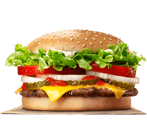
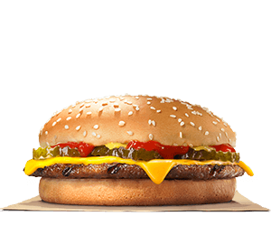
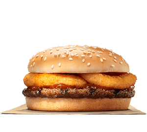
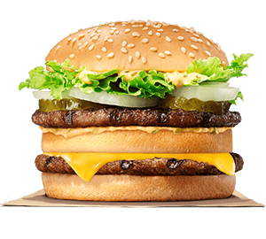
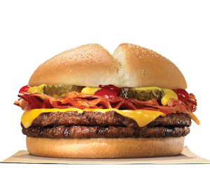

Hamburguesas
Tenemos dos clases de hamburguesas: a la parrilla y de pollo.
Whopper BBQ
La hamburguesa que lleva nuestra marca. Prueba la nueva creación con carne a la parrilla, mayonesa, lechuga, cebolla, jitomate, pepinillos, queso americano y crujientes trozos de tocino. ¡Todo acompañado de una deliciosa salsita BBQ!
 ComproHamburguesa Normal con Queso
Siempre es una buena opción elegir nuestra hamburguesa con queso, deliciosa carne a la parrilla cubierta con una rebanada de queso amarillo derretido, pepinillos frescos, mostaza y salsa de tomate, sobre un pan suave con ajonjolí.
 ComproRodeo burger
Rodeo Burger, una deliciosa opción crujiente, acompañada de salsa BBQ ahumado y aros de cebolla crujientes, servidos con un pan suave con ajonjolí.
 ComproBig King
Nuestra BIG KING® cuenta con dos carnes a la parrilla, una rebanada de queso amarillo, lechuga fresca, cebolla crujiente, pepinillos y salsa agridulce con tres rebanadas de pan suave con ajonjolí. ¡Pídela en COMBO con papas a la francesa y refresco frío!
 ComproMega XT
Nuestra MEGA XT® cuenta con 7 onzas de jugosa carne a la parrilla, queso amarillo, pepinillos, tocino crujiente y deliciosas salsas.
 Compro